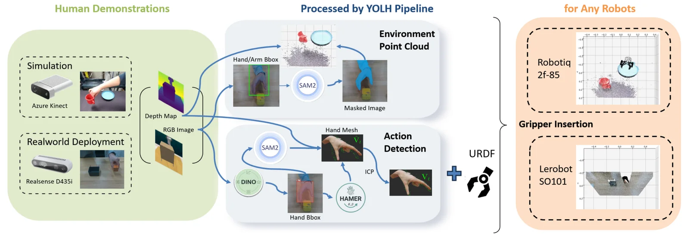

YOLH: You Only Learn from Humans

Teleoperation is the standard way to collect robot demonstrations — but it's slow, requires specialized hardware, and produces unnatural motions. YOLH asks a simpler question: what if we just watch humans do the task? A person performs a manipulation task naturally, we capture it with RGB-D, and a diffusion policy learns from those demonstrations directly.
Simulation
Pipeline
Human demonstrations are captured with an Azure Kinect (simulation) or Intel RealSense D435i (real-world deployment). The RGB and depth streams feed into a SAM2-based segmentation stage that extracts environment point clouds and masked images. In parallel, a HAMER hand-mesh estimator reconstructs the demonstrator's hand geometry and velocities, providing the action signal Vt via ICP alignment.
Those trajectories are retargeted to the robot's kinematic constraints and fed as training data into a RISE-based diffusion policy. RISE conditions the denoising process on visual observations, letting the policy generalize across object positions without explicit state estimation. The key insight is that diffusion policies are naturally multi-modal — they can represent the full distribution of valid actions rather than collapsing to a single mean.
Platform
The pipeline is robot-agnostic: the same learned demonstrations drive both a Robotiq 2f-85 gripper and a Lerobot SO101 arm. Early experiments focus on tabletop pick-and-place; longer-term the goal is whole-body manipulation tasks where locomotion and manipulation policies run simultaneously on the Unitree Go2W quadruped.
Status
Active development at Atombot (Extreme Robotics Lab). Motion-capture pipeline is validated and complete. Diffusion policy training is ongoing across both hardware platforms.
Stack
ROS2 · Intel RealSense D435i · Azure Kinect · SAM2 · HAMER · PyTorch · RISE diffusion policy · Unitree Go2W · Robotiq 2f-85 · Lerobot SO101